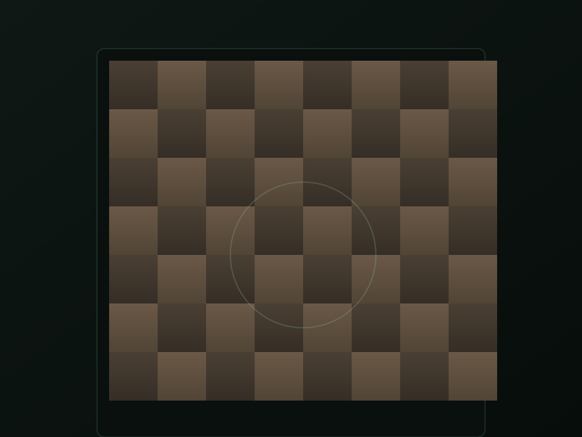

01
Všechny věkové kategorie
Děti zvládnou orientaci díky barvám na desce; dospělí ocení hloubku analýzy a klidné tempo partii. Rodiče, kroužky, kavárny i domácí kluby — jedna deska, mnoho způsobů učení.
Učení šachů · pro celou rodinu · pro kluby i školy
CzechMate spojuje osahatelné figurky s barevnými LED na desce a chytrou aplikací. Hodí se pro děti i dospělé, úplné začátečníky i hráče, kteří chtějí pilovat strategii. Deska ti ukáže tahy a varování přímo na polích; aplikace rozšíří partii o motor Stockfish, analýzu a AI kouče v chatu, se kterým můžeš řešit plány, varianty i chyby z aktuální nebo nedávné partie.
Vzdělávání
Šachy jsou nejkrásnější, když je člověk vidí na šachovnici a zároveň dostane jasnou zpětnou vazbu. CzechMate na to myslí od začátku: fyzický kontakt s figurkami, okamžité světlo na polích a digitální vrstva s vysvětlením pravidel a pozice, partii proti počítači i rozhovorem s AI trenérem.
Děti zvládnou orientaci díky barvám na desce; dospělí ocení hloubku analýzy a klidné tempo partii. Rodiče, kroužky, kavárny i domácí kluby — jedna deska, mnoho způsobů učení.
Začátečník vidí, kam smí táhnout a co znamená šach nebo mat. Pokročilý řeší kombinace, tahové plány a hodnocení pozice — s podporou motoru i konverzací s koučem.
Hmat (figurky), zrak (LED a aplikace), sluch při výkladu od živého trenéra nebo čtení odpovědí AI — více kanálů znamená lepší zapamatování pravidel i vzorců.
Deska jako lektor
Deska nepozná jen pozici — umí ji interpretovat pro výuku: zvýraznit doporučený tah, upozornit na šach, vést ke správnému provedení promoce nebo zopakovat animaci koncovky. Logika běží přímo v desce v reálném čase, takže LED vždy odpovídá tomu, jak figurky skutečně stojí. Software desky umíš aktualizovat bez kabelů — přímo z aplikace, z rozhraní desky v prohlížeči nebo přes Wi‑Fi.

Kombinace reedové matice (skutečná pozice figurek) a řady LED ti dává jasnou vizuální nápovědu přímo na šachovnici — méně tápání, víc jistoty u každého tahu. Po připojení telefonu nebo počítače získáš navíc přehled partie: historii tahů, textové nápovědy z rozhraní desky v prohlížeči a stejnou pozici v aplikaci CzechMate.
Motor a protihráč
Soustava podporuje šachový motor Stockfish: přes rozhraní desky v prohlížeči (Wi‑Fi) můžeš hrát proti počítači s nastavitelnou silou a sledovat návrhy tahů. V aplikaci CzechMate máš analýzu pozic napojenou na stejný typ motoru — pomůže ti najít silné pokračování nebo pochopit, kde ses odchýlil od nejlepšího tahu.
Vhodné pro trénink bez lidského partnera: zkusíš si znovu klíčové pozice a ověříš plány proti konzistentnímu soupeři.
Odhad výhody v přibližných pěšcích podle motoru ti pomůže číst pozici — zvlášť ve střední hře a koncovkách.
Stejná logika partie na desce i v aplikaci znamená, že výuka na světlech a na displeji si rozumí.
AI kouč v aplikaci
V aplikaci CzechMate najdeš koučovský režim: konverzace o aktuální pozici, plánech na několik tahů dopředu, typických chybách začátečníků i hlubších strategických tématech. Nastavitelná je úroveň výkladu podle tvých zkušeností, aby text seděl jak školákům, tak klubovým hráčům.

V nastavení si vybereš preferovaného asistenta — cloudovou službu podle tvého účtu nebo lokální řešení, aby výuka odpovídala pravidlům ve škole, klubu nebo doma. Bez připojení nebo přihlášení nabízí aplikace základní offline nápovědu z vestavěných šachových rad, takže výuka neskončí na prázdné obrazovce.
Aplikace CzechMate
Aplikace pro Android a macOS drží přehled o partii, připojení k desce přes Bluetooth nebo síť, výukové funkce i prostor pro Stockfish a AI kouče — vše v jednom programu, bez skákání mezi nástroji. V nastavení najdeš i aktualizaci softwaru desky podle aktuálního vydání — bez zapojování k počítači kabelem.
Orientace v partii a řízení zvýraznění tahů na desce — aplikace rozšiřuje to, co už vidíš na LED.
Ocenění tahů a návrhy pokračování díky vestavěnému napojení na motor Stockfish.
Diskuze o strategii, plánech a chybách; volitelný inteligentní asistent podle tvého nastavení.
Bluetooth nebo síť v dosahu desky — stejná partie na šachovnici i na displeji.
Z prohlížeče přes Wi‑Fi — výuka i hra proti botovi tam, kde má deska síť.
Nový software na desku nahraješ z aplikace CzechMate — bez programátoru a bez kabelů k čipu; přes Wi‑Fi i úplně bezdrátově. Průběh ti ukážou světla na šachovnici.
Software desky i aplikace jsou veřejné — školy a kluby si mohou řešení přizpůsobit.
Stažení
Nejnovější aplikaci pro Android (APK) a macOS (DMG) najdeš na GitHub Releases. Na Androidu případně povol instalaci z neznámého zdroje, pokud neinstaluješ z obchodu. Na Macu s Apple Silicon otevři DMG a aplikaci přetáhni mezi programy.
Otevři nejnovější vydání na GitHubu a vyber soubor pro Android (koncovka .apk) nebo macOS (koncovka .dmg). Obvykle nesou v názvu označení CzechMate a verzi.
Vydání přes TestFlight a následně App Store, jakmile projde schválením Apple.
PřipravujemeInstalátor pro Windows přidáme, jakmile bude připravený k veřejnému stažení.
PřipravujemeCzechMate buduje otevřenou výukovou platformu — hardware, software desky i aplikaci si může kdokoli stáhnout a dál upravovat. Kompletní návody, zapojení a technické podklady najdeš na GitHub Pages v dokumentaci. Přidej se — výukové texty, překlady i vylepšení hardwaru nebo softwaru mají smysl pro celou komunitu kolem šachů.
Repozitář na GitHubu